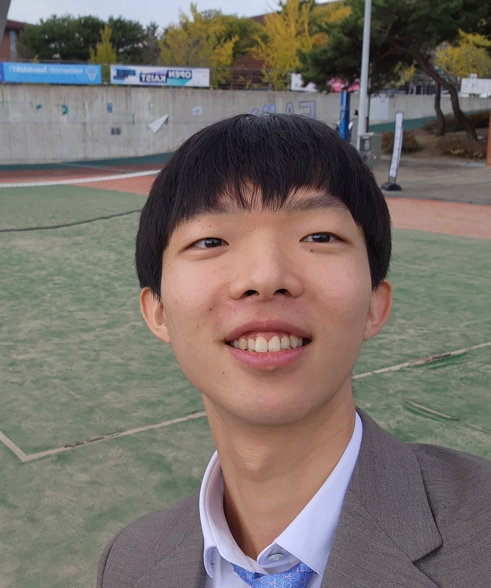

Findings of EACL
Argument Reconstruction as Supervision for Critical Thinking in LLMs
Teaching models to make implicit inferences explicit through argument reconstruction.

Master’s student · Graduate School of AI, KAIST
Hi! I’m Hyun, a master’s student at KAIST AI, advised by Prof. Eunho Yang. I study how to make large language models better at reasoning, argumentation, and critical thinking.
My research focuses on model training and evaluation on non-verifiable tasks, including mid-training for improving critical thinking ability (Arguinas), rubric-based RL training (FORK), and paper review evaluation (ReviewScore). I also worked on neuro-symbolic approaches, including natural language formalization (CLOVER, ReviewScore, Arguinas).
Previously, I was a visiting student at Carnegie Mellon University’s Language Technologies Institute, co-advised by Carolyn Rosé and Sean Welleck. I interned at LG AI Research working with Moontae Lee, and I also collaborated with Gregor Betz at Karlsruhe Institute of Technology’s Department of Philosophy. I received my B.S. in Electrical Engineering from KAIST.
Teaching models to make implicit inferences explicit through argument reconstruction.
Balancing rubric coverage with response precision to mitigate reward hacking in reinforcement learning.
Evaluating peer reviews by detecting incorrect premises and questions already answered by a paper.
Compositional translation into first-order logic with verification for reliable logical reasoning.
* Equal contribution.